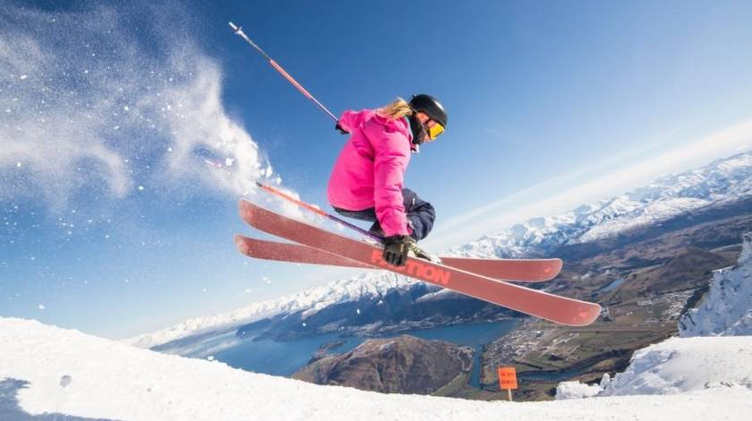
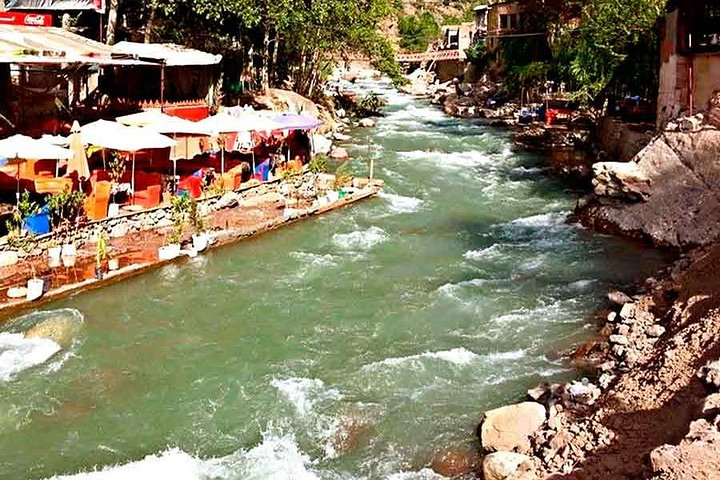
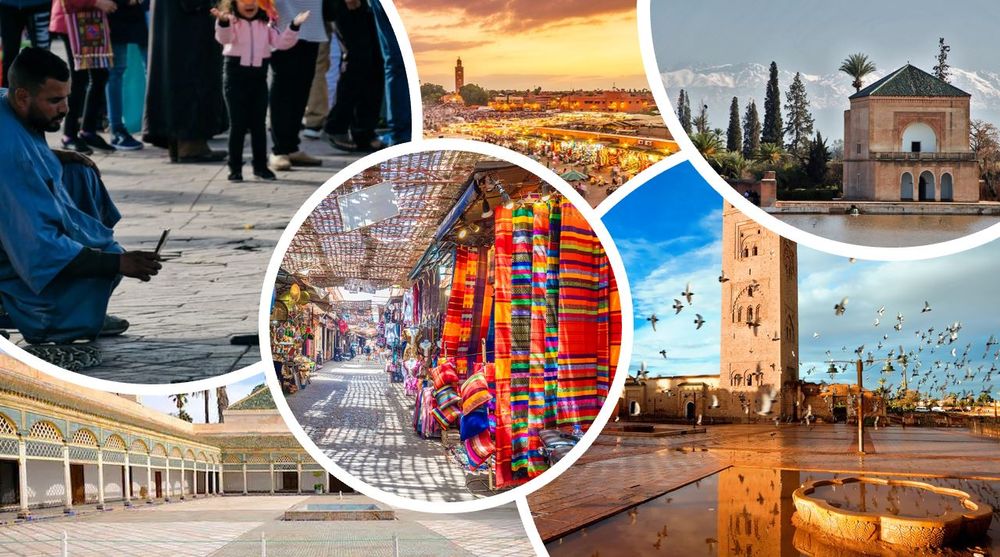

Discription
Enjoy one of the best moments in Marrakech with 3 days full of adventures and incredible natural places.
The departure will be at 07:00 from Casablanca, and take the road with a stop en route for
Reserve your comfortable place and take the road to the beautiful red city, a professional driver
Wake up in your charming riad, have a delicious breakfast, then you can have your free time to get the budget is fixed at: 900 dh
To have a place, book your reservation (number of places is limited) :
If you have a problem with booking your reservation, please contact us:
Head to Ourika and enjoy the beauty of the rivers and discover the Atlas Mountains,
have a comfortable time in Setti Fatma with a delicious lunch included in the price.
Let yourself be surprised by the comfort of your riad where you will spend your night
with a delicious dinner and wake up for a quad adventure in the rocky desert of Agafay!!
Activities
Day 1
reakfast (not included) and take photos for memory; to continue the Route to Marrakesh.
You will settle at a Nice hotel and have lunch (Not Include).
Have some rest before you go for the first activity.
The first activity will be Caleche.

Take a wonderful horse-drawn carriage ride through the best destinations in Marrakech,
and discover
the best places at Marrakech.
Day 2
will be waiting for you to take you for your second day which will be in Marrakech, a few stops
on the road then you will arrive at OUKAIMDEN.

Enjoy more of the amazing nature that surrounds the road to OUKAIMDEN,
learn more from our driver about the area. Then, take some free time in OUKAIMDEN
with breathtaking views of the snow in winter or the natural landscapes in spring.
After 2.5 hours in OUKAIMDEN, meet the driver to continue the trip to Ourika where you will have
lunch (included) in the most amazing restaurants in Ourika
and which is famous for its delicious
Moroccan cuisine.

After lunch and some rest, spend the whole afternoon visiting Ourika and enjoying the calm.
And you can take the way back to your Riad and have a good shower and dinner at the riad
(Included).

Day 3
ready and visit the city and take your time in the medina.
*

In the afternoon, you will have your departure for Casablanca leaving a beautiful unforgettable
moment in Marrakech
Budget
Inscription
Constact US